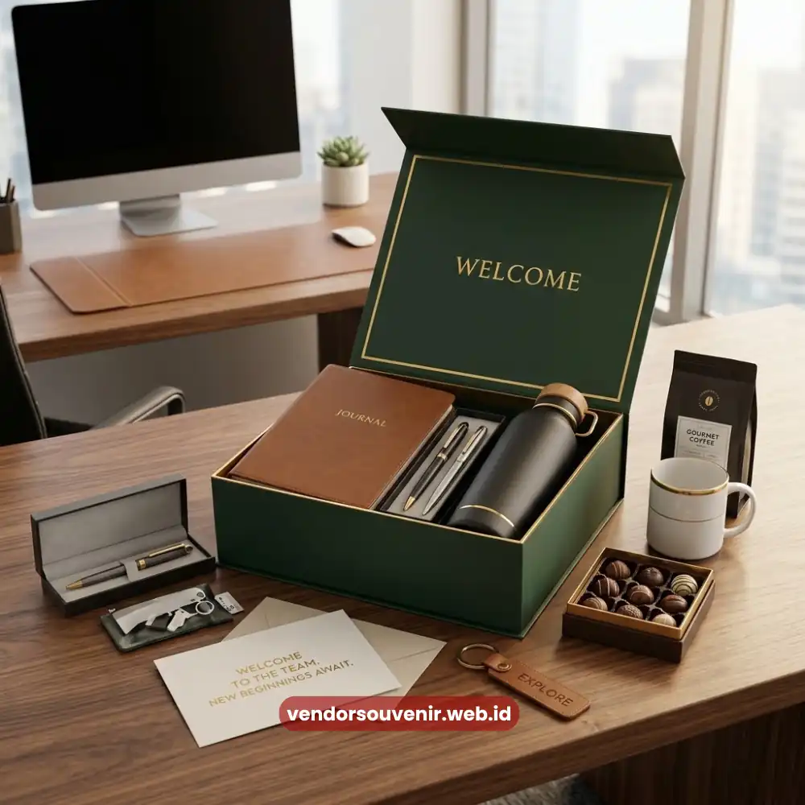
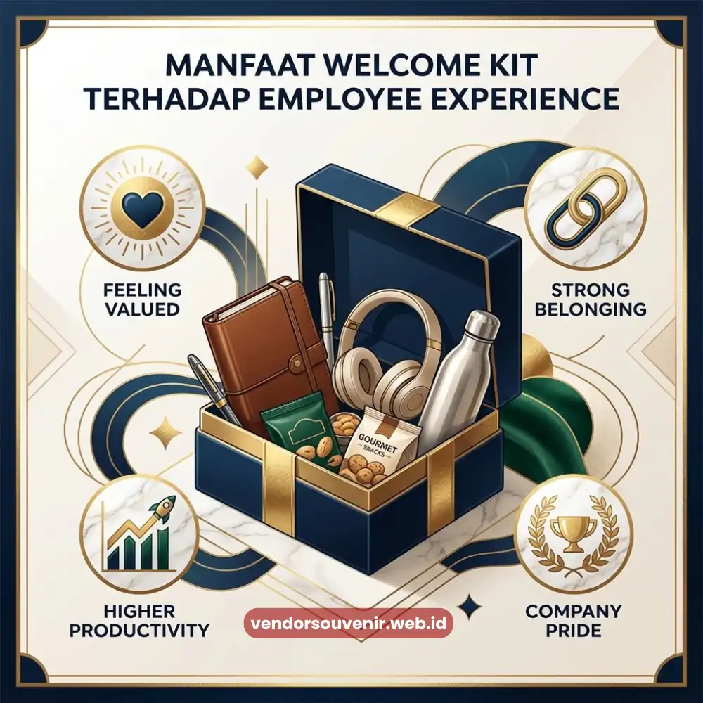

Daftar Isi
Manfaat welcome kit karyawan baru tidak hanya terlihat dari sisi seremonial semata.
Lebih dari itu, paket ini berdampak nyata pada employee experience dan tingkat keterlibatan karyawan.
Selain itu, welcome kit juga mampu meningkatkan loyalitas karyawan terhadap perusahaan.
Paket sambutan ini membantu karyawan baru merasa diterima secara emosional dengan baik.
Sekaligus memberikan dukungan praktis yang sangat berguna di hari-hari awal mereka bekerja.
Perusahaan yang konsisten memberikan welcome kit berkualitas umumnya memiliki citra yang lebih kuat.
Employer branding mereka cenderung lebih positif dibandingkan perusahaan yang mengabaikan aspek ini.
- Welcome kit berkontribusi pada peningkatan employee experience sejak hari pertama kerja.
- Paket sambutan yang baik berpotensi mendukung retensi dan keterlibatan karyawan jangka panjang.
- Welcome kit memperkuat employer branding di mata karyawan baru maupun calon pelamar kerja.
- Manfaat welcome kit terasa lebih optimal jika diintegrasikan dengan proses onboarding yang terstruktur.
Apa Manfaat Welcome Kit Karyawan Baru bagi Employee Experience?
Employee experience karyawan baru sangat dipengaruhi oleh momen-momen awal mereka bergabung.
Hal ini termasuk bagaimana proses sambutan dilakukan oleh perusahaan tersebut.
Welcome kit menjadi salah satu titik sentuh nyata yang membentuk persepsi pertama karyawan.
Khususnya dalam menilai budaya kerja perusahaan tempat mereka baru saja bergabung.
Welcome kit yang disiapkan dengan baik turut menjadi bagian dari pengalaman onboarding tersebut.
Karena memberikan bukti fisik dari perhatian perusahaan terhadap karyawan barunya.
Bagaimana Welcome Kit Berkontribusi pada Retensi Karyawan?
Retensi karyawan sangat erat kaitannya dengan bagaimana perusahaan memperlakukan karyawan.
Khususnya perlakuan positif sejak fase awal mereka bergabung dengan perusahaan.
Welcome kit berperan penting sebagai salah satu elemen pendukung dalam proses tersebut.
Karyawan yang merasa disambut dengan baik sejak awal cenderung memiliki keterikatan emosional.
Keterikatan ini menjadi lebih kuat terhadap perusahaan tempat mereka bekerja.
Sehingga potensi mereka bertahan dalam jangka panjang menjadi jauh lebih tinggi.
Dibandingkan karyawan yang tidak mendapatkan pengalaman onboarding yang memadai.

Peningkatan Employee Experience Berkat Welcome Kit
Mengapa Welcome Kit Berdampak pada Employer Branding Perusahaan?
Employer branding tidak hanya dibangun melalui kampanye rekrutmen semata.
Tetapi juga dibangun melalui pengalaman nyata karyawan yang sudah bergabung.
Karyawan baru yang mendapatkan welcome kit berkualitas cenderung membagikan pengalaman positif tersebut.
Baik secara langsung kepada rekan mereka maupun melalui media sosial pribadi mereka.
Dampak ini secara tidak langsung memperkuat citra perusahaan sebagai tempat kerja yang baik.
Khususnya sebagai perusahaan yang sangat memperhatikan kesejahteraan dan kenyamanan timnya.
Yang pada akhirnya dapat membantu proses rekrutmen perusahaan di masa mendatang.
Karena reputasi perusahaan sebagai employer yang atraktif semakin dikenal luas.
Bagaimana Welcome Kit Memengaruhi Produktivitas Karyawan di Fase Awal?
Selain aspek emosional, welcome kit turut berkontribusi pada aspek produktivitas karyawan baru.
Ketika karyawan menerima perlengkapan kerja dasar sejak hari pertama mereka masuk.
Mereka dapat lebih cepat fokus menjalankan tugas dan tanggung jawabnya.
Tanpa perlu repot mengurus kebutuhan operasional secara mandiri terlebih dahulu.
Kondisi ini sejalan dengan temuan terkait onboarding yang efektif di perusahaan.
Bahwa perusahaan dengan onboarding yang efektif dapat meningkatkan produktivitas karyawan baru.
Peningkatannya bahkan bisa mencapai hingga lebih dari 70 persen.
Hal ini jika dibandingkan dengan perusahaan tanpa proses onboarding yang terstruktur.
Apakah Manfaat Welcome Kit Berlaku untuk Semua Jenis Perusahaan?
Manfaat welcome kit pada dasarnya berlaku untuk berbagai jenis dan skala perusahaan.
Mulai dari perusahaan startup, perusahaan menengah, hingga korporasi besar maupun instansi.
Perbedaannya umumnya terletak pada skala dan kompleksitas isi welcome kit itu sendiri.
Bukan terletak pada prinsip dasar manfaatnya terhadap pengalaman karyawan baru.
Perusahaan dengan anggaran terbatas pun tetap dapat merasakan manfaat ini.
Caranya adalah melalui pembuatan welcome kit yang sederhana namun tetap dirancang dengan baik.
Dengan memperhatikan kualitas serta sentuhan personal yang relevan bagi karyawannya.
Kesimpulan
Manfaat welcome kit karyawan baru mencakup peningkatan employee experience secara nyata.
Welcome kit juga memberikan dukungan besar terhadap strategi retensi karyawan perusahaan.
Manfaat lainnya termasuk penguatan employer branding hingga percepatan produktivitas di fase awal.
Investasi kecil pada welcome kit dapat memberikan dampak jangka panjang yang menguntungkan.
Terutama bagi hubungan karyawan dengan perusahaan yang akan bertahan signifikan.

Wujudkan Welcome Kit Karyawan yang Berkesan!
Tim kami siap membantu Anda menyusun paket onboarding eksklusif sesuai budget perusahaan.
Bangun citra positif dan tingkatkan semangat kerja tim dengan merchandise berkualitas.
Dapatkan katalog produk welcome kit kami secara gratis!
FAQ Seputar Manfaat Welcome Kit Karyawan Baru
Apakah welcome kit benar-benar berpengaruh pada loyalitas karyawan?
Welcome kit berkontribusi sebagai salah satu elemen pendukung loyalitas karyawan, terutama bila diintegrasikan dengan proses onboarding yang terstruktur secara menyeluruh.
Apakah manfaat welcome kit hanya dirasakan karyawan baru?
Tidak hanya karyawan baru, perusahaan juga merasakan manfaat berupa penguatan employer branding dan citra positif di mata calon karyawan maupun klien.
Apakah welcome kit perlu diberikan untuk karyawan kontrak atau magang?
Sangat disarankan, karena setiap individu yang bergabung, termasuk karyawan kontrak atau magang, tetap berhak mendapatkan pengalaman onboarding yang baik untuk mendukung kinerja mereka.
Dengan memahami berbagai manfaat ini, tidak ada alasan bagi perusahaan untuk menunda investasi pada program welcome kit yang berkualitas.
Maroon Souvenir
Partner Corporate Gift terpercaya di Indonesia. Berpengalaman melayani ratusan perusahaan sejak 2018.
Lihat Portofolio Kami